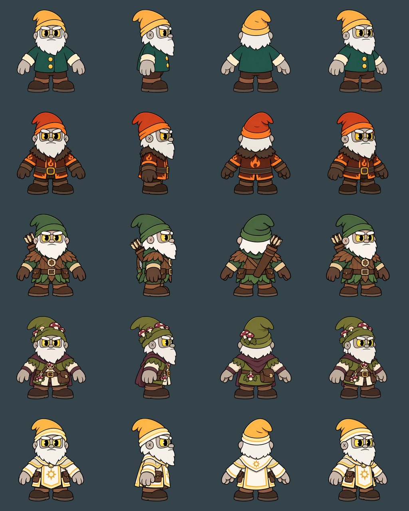

Each character sheet is a transparent 2048 × 512 PNG with four views. The ZIP includes all 20 individual 512 × 512 frames, five character sheets, the full preview, and export notes.
If a PNG opens instead of downloading, right-click the image and choose Save image as. These files are also already saved beside this page in your project folder.
